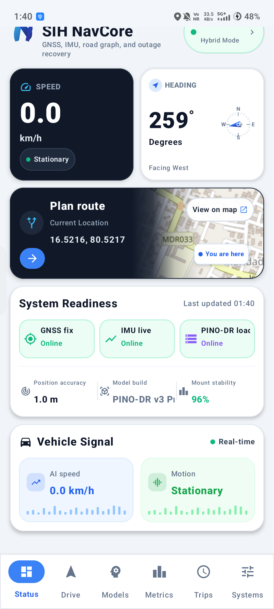

Tunnels • Canyons • Jamming Environments
Continuous on-device vehicle odometry with zero external signals
16.9K parameter lightweight polar-adapted model with sub-millisecond on-device latency.
Interacting multiple models + RBPF + sliding-window factor graph optimization.
Raw 6-DoF accelerometer & gyroscope fusion with dynamic bias compensation.

Real-time vehicle dead reckoning running on consumer mobile hardware.
When the sky goes dark, navigation continues.